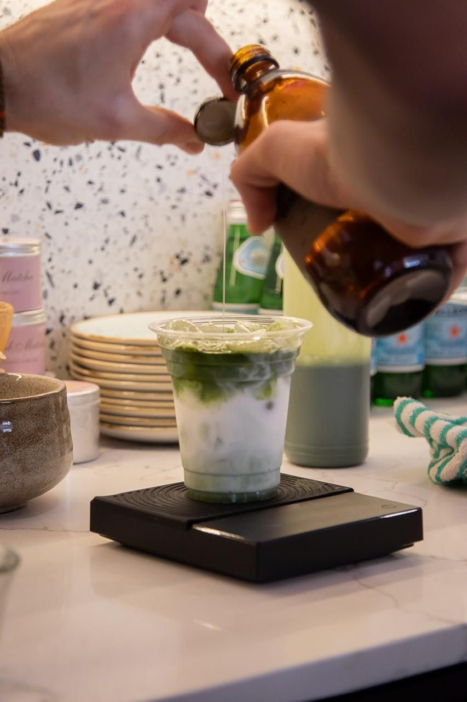
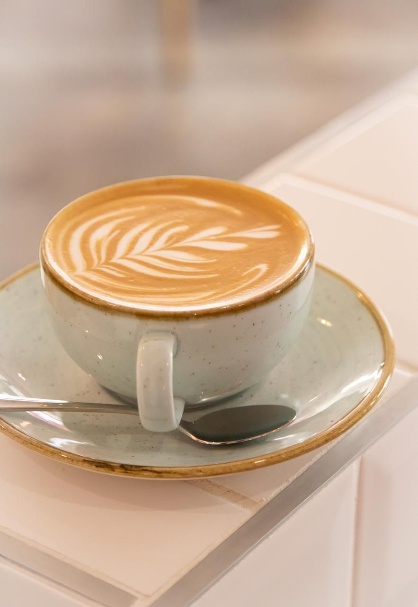
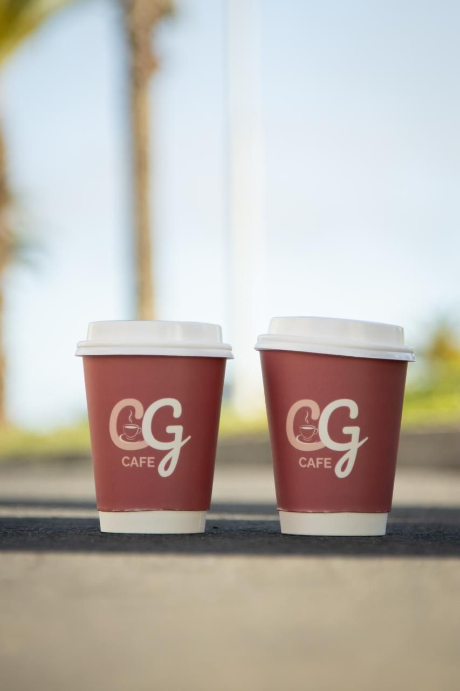
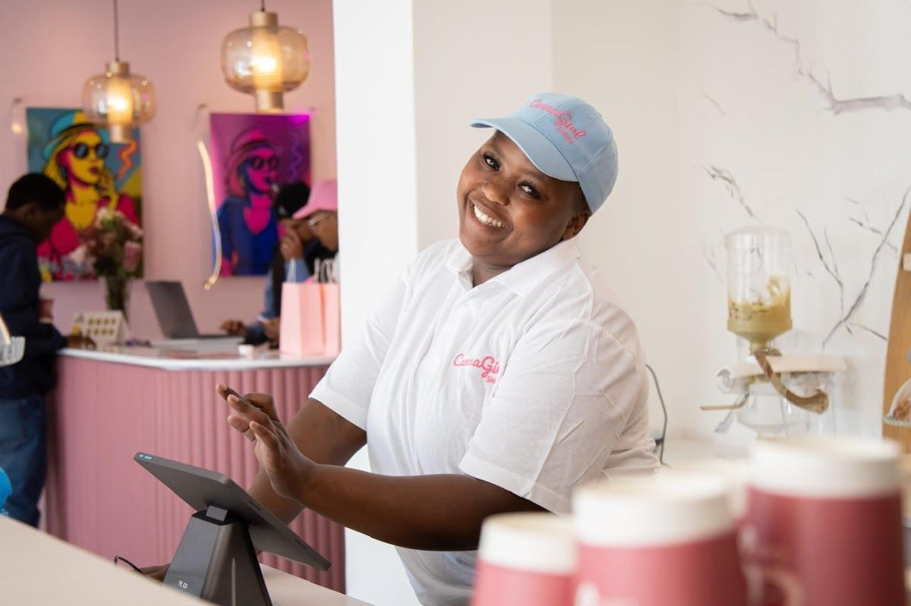

I started CG Cafe with the dream of creating a space where coffee lovers can relax and enjoy meticulously crafted brews. My passion for coffee began during my travels, where I discovered unique blends and brewing techniques.
CG Cafe serves the community with a cozy atmosphere and top-quality coffee sourced from sustainable farms. Our team is dedicated to providing a warm welcome and an exceptional experience for everyone who visits.
We value quality and sustainability, ensuring every cup of coffee not only tastes great but also supports ethical practices. Our promise is to deliver an unforgettable experience with every visit.
At CG Cafe, we offer a variety of delicious products crafted with care and passion. Explore our offerings below.
Our specialty coffee is brewed using top-quality beans sourced from sustainable farms, promising a rich and flavorful experience.
Indulge in our freshly baked pastries, made with the finest ingredients. Perfect for pairing with your coffee.
Discover our selection of herbal teas, offering soothing flavors and health benefits. A delightful alternative to coffee.
Here is what our clients say about us.
"Absolutely love this spot. The atmosphere is relaxed and welcoming, the staff really know their products, and the quality is top-tier. The coffee is also surprisingly good – smooth and well made. It’s the perfect place to unwind. Will definitely be back!"— Thaufier Solomons, ⭐⭐⭐⭐⭐
"CG Cafe is an absolute gem! From the moment you walk in, you’re greeted with a warm, inviting atmosphere and friendly staff who genuinely care about your experience. The coffee is exceptional; rich, smooth, and perfectly brewed every time. Whether you’re grabbing a quick morning pick-me-up or settling in to relax, this place never disappoints. The sweet treats are just as impressive; fresh, delicious, and beautifully presented. You can really tell they use quality ingredients. The cozy ambiance makes it the perfect spot for catching up with friends, getting some work done, or simply enjoying a quiet moment with an amazing cup of coffee. Highly recommend CG Cafe to anyone looking for top-notch coffee and outstanding service. Definitely a 5-star experience every visit!"— Amanda Sarrimanolis, ⭐⭐⭐⭐⭐
"Absolutely love CannaGirl - have met some great people there and the filled croissants were the best, great coffee and lovely decor. I travel to CT monthly and try make sure I visit each time I go."— Barry Stuart, ⭐⭐⭐⭐⭐
"CG Cafe in Blaauwberg has a really easygoing, local feel. The coffee’s consistently good, the food is fresh, and the atmosphere is calm without trying too hard. It’s the kind of place that feels familiar after one visit. Perfect for a casual catch-up or a quiet coffee stop near the beach."— Andre Foster Black, ⭐⭐⭐⭐⭐
"Amazing coffee, great service and Luke, the owner is often there and happy to meet the locals and have a chat! Highly recommended!"— Jared Paiva, ⭐⭐⭐⭐⭐




We'd love to hear from you — reach out to us anytime.